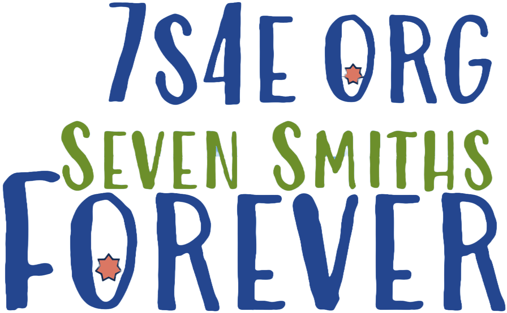

Welcome family, to your website!

This site is a gathering spot for the Smith Family. As the family grows and is dispersed around the country and the globe, we can gather here to continue sharing our current lives as we prepare to be together for the eternal ones.
Curently this site has two pages beyond this home page: Calendar and Games.
- The Calendar page is currently limited to our travel itineraries this summer. This should help everyone see who will be where and when, and enable family in Arizona and New York (and Jacob in Tennesse) to know when to expect us--and when to look forward to our departure! In this future, it will be a tool for remembering birthdays and flagging important events.
- The Games page is currently limited to the Wordle game that I built with JavaScript. Like games? Want to learn how to code one? Let's talk!
Future pages will include dedicated pages for your individual use (if you want one), family history, recipies, photo albums, and contact information, to include social media details. Ultimately, this site is intended to provide custom content that complements what you are already using. This is your site, if you'll have it. Let me know what you would like to see and what you would like to share.